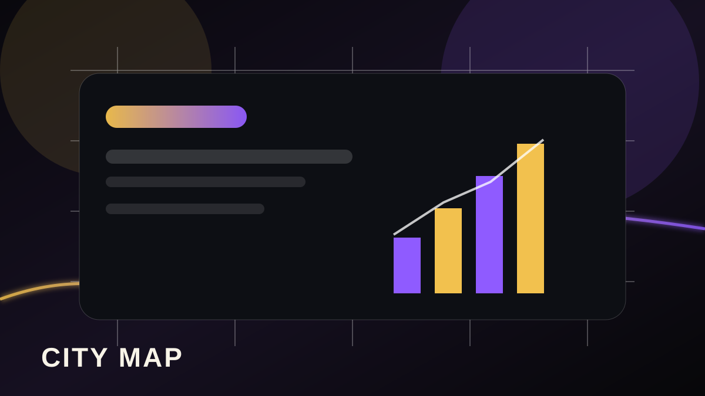

Mesa business growth and visibility page.
A focused local page for Mesa businesses covering local market signals, reputation gaps, service-area competition, and growth readiness.

A focused local page for Mesa businesses covering local market signals, reputation gaps, service-area competition, and growth readiness.

Visitors need to know whether the company serves Mesa, what proof exists, and how quickly they can get help.
Missing reviews, weak photos, unclear service areas, and buried contact options reduce confidence.
Build a clearer page, strengthen proof, route leads faster, and publish useful local content.
Approved local growth, reputation, booking, and service-area visuals are embedded into city, report, and playbook pages where they support the regional growth story.

Approved proof asset from the supplied production archive, placed here because it supports this page's public claim path.

Approved proof asset from the supplied production archive, placed here because it supports this page's public claim path.

Approved proof asset from the supplied production archive, placed here because it supports this page's public claim path.

Approved proof asset from the supplied production archive, placed here because it supports this page's public claim path.